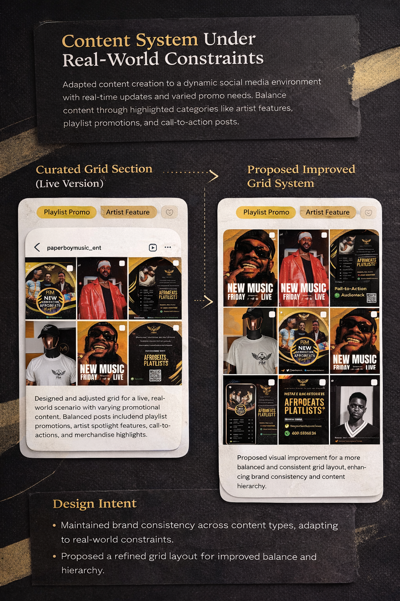

Designing bold and expressive visuals to promote music and capture attention instantly.
Paperboy Music focuses on creating strong visual identity for music promotion. The goal was to design visuals that stand out, communicate energy, and attract attention across platforms.
The designs emphasize bold typography, strong contrast, and expressive composition to reflect the energy of the music.



The final visuals create a strong and memorable presence, helping the music stand out and connect with its audience.
Available for collaboration
Chimaconfidence086@gmail.com